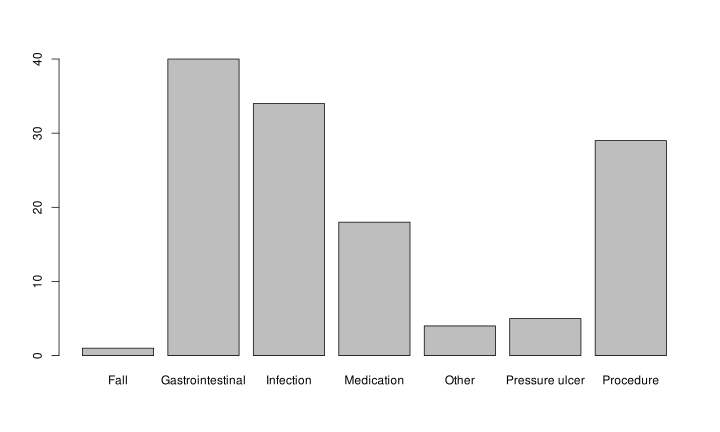
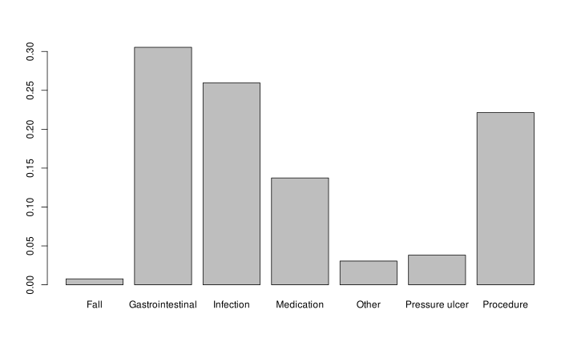
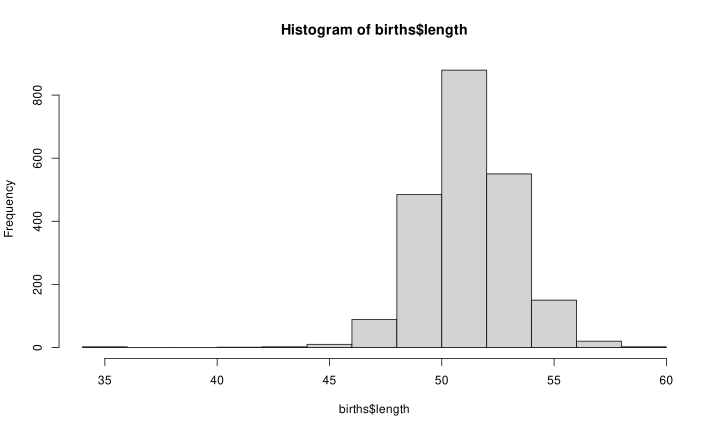
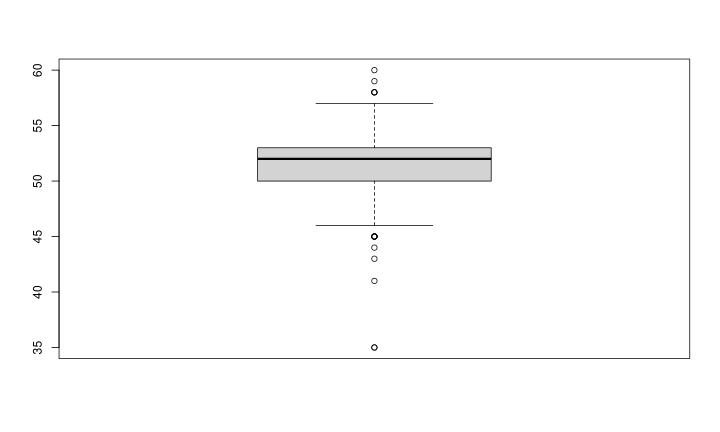
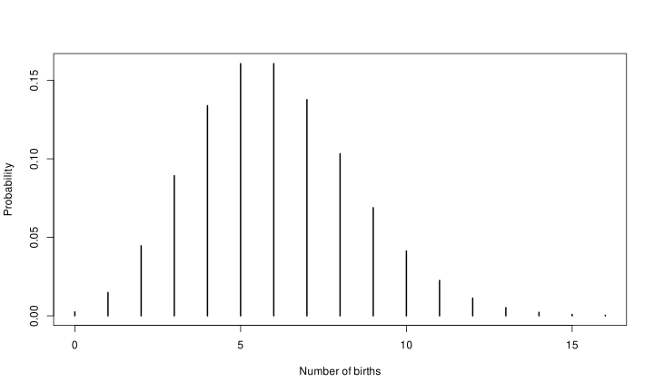
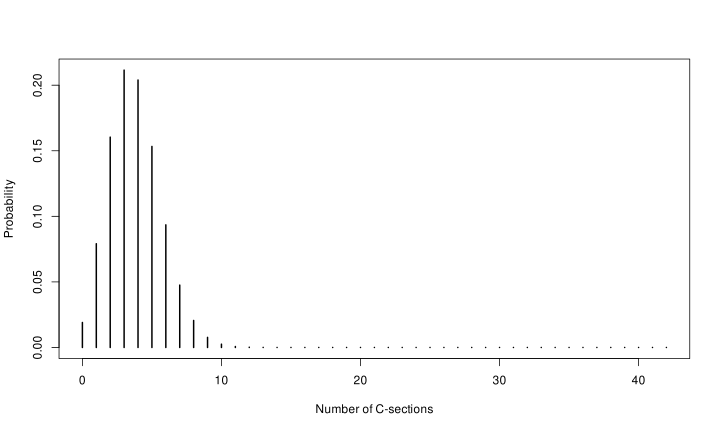
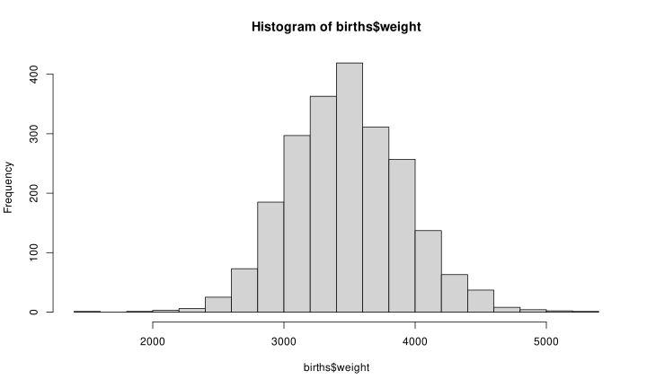
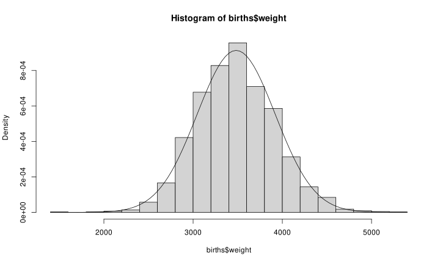

B Basic Statistical Concepts
Understanding data is the foundation of effective decision-making in quality improvement. While this chapter is not intended as a comprehensive statistics course, it introduces key concepts related to data types, summarisation, and visualisation.
These concepts are essential for selecting appropriate SPC charts, interpreting patterns correctly, and ensuring that conclusions drawn from data are valid.
B.1 Data types
Data can broadly be classified into categorical and numerical types. Distinguishing between these is crucial, as it determines how data can be analysed and visualised.
B.1.1 Categorical data
Categorical (qualitative) data describe characteristics rather than quantities. Examples include: colours [red, green, blue], specialities [medicine, surgery, psychiatry], and risk levels [low, medium, high].
These data cannot be meaningfully combined using arithmetic operations. Categorical data can be further divided into:
- Nominal data: Categories without inherent order, e.g. [red, green, blue].
- Ordinal data: Categories with a meaningful order but unequal intervals, e.g. [low < medium < high].
If only two categories exist (e.g. yes/no, alive/dead), the data are binary (or binomial).
Categorical data are often converted into numbers by counting frequencies. In some cases, ordinal categories may be assigned numerical scores, but this should only be done when the intervals are meaningful. For example, converting cancer stages [I, II, III] to [1, 2, 3] is misleading unless the progression is truly proportional.
Finally, some data may appear numerical but are actually categorical identifiers (e.g. postal codes, ID numbers). A simple test is to ask: does it make sense to calculate an average? If not, the data are categorical.
B.1.2 Numerical data
Numerical (quantitative) data represent measurable quantities and can be analysed using arithmetic operations.
They are divided into:
- Discrete data: counts (whole numbers), e.g. number of admissions, infections
- Continuous data: measurements (any value within a range), e.g. height, weight, waiting time
Numerical data can also be grouped into categories (e.g. blood pressure categories), but doing so reduces information and should be done with care.
B.2 Summarising categorical data
Categorical data are typically summarised using counts or proportions. Using the Adverse events dataset assigned to the variable ae:
##
## Fall Gastrointestinal Infection Medication
## 1 40 34 18
## Other Pressure ulcer Procedure
## 4 5 29Visualisation is often done using bar charts:

Figure B.1: Bar chart of adverse event frequencies

Figure B.2: Bar chart of adverse event proportions.
The only difference between figures B.1 and B.2 is the y-axis scale.
For binary data, we often summarise using proportions:
## [1] 0.007633588B.3 Summarising numerical data
Numerical data are typically described using:
- Centre (central tendency)
- Shape (distribution)
- Spread (variation)
A quick overview can be obtained using the summary() function:
## Min. 1st Qu. Median Mean 3rd Qu. Max. NA's
## 35.0 50.0 52.0 51.7 53.0 60.0 3B.3.1 Centre
The centre describes the “typical” value in the data.
- Mean: average of all values
- Median: middle value
The mean is sensitive to extreme values, whereas the median is robust.
Example:
- [1, 2, 3] → mean = 2, median = 2
- [1, 2, 999] → mean = 334, median = 2
In SPC:
- Mean is used for control charts
- Median is used for run charts
The median is particularly useful for runs analysis because it splits the data into two equal halves, ensuring balanced probabilities.
B.3.2 Shape
The shape describes how values are distributed.
Key features include:
- Symmetry / skewness
- symmetric: mean ≈ median
- right-skewed: long tail to the right, mean > median
- left-skewed: long tail to the left, mean < median
- Modality
- unimodal: one peak
- bimodal: two peaks
Histograms provide a clear visualisation (Figure B.3):

Figure B.3: Histogram of birth lengths.
Bi- and multi-modal data often indicate different underlying processes and should prompt investigation and possible stratification.
B.3.3 Spread
Spread describes how much the data vary.
Common measures:
- Range: max − min
- Interquartile range (IQR): middle 50%
- Standard deviation (SD): average distance from the mean
A useful visual summary is the boxplot (Figure @ref(fig:fig.stat-box1)):

Figure B.4: Boxplot of birth lengths.
The box in a box plot represents the interquartile range (IQR), while the line inside the box indicates the median. The whiskers extend from either end of the box to the smallest and largest values that lie within 1.5 times the IQR from the quartiles. Any dots beyond the whiskers represent more extreme values – often referred to as outliers, though there is often nothing truly outlandish about them.
In SPC, standard deviation is central because it defines control limits.
For many distributions:
- ~68% within ±1 SD
- ~95% within ±2 SD
- ~99% within ±3 SD
This supports the use of three-sigma limits even when data are not perfectly normal.
B.4 Theoretical distributions
While SPC is primarily empirical, theoretical distributions help define expected variation. We focus on three:
- Poisson (counts)
- Binomial (proportions)
- Gaussian (continuous data)
B.4.1 Poisson distribution – predicting the number of events
The Poisson distribution – named after the French mathematician Siméon Poisson – describes the probability of a given number of events occurring within a fixed time interval, assuming that the events happen independently of one another and at a constant average rate, commonly denoted by lambda (λ). It is used to estimate the control limits for C- and U-charts.
Based on the birth data, we estimate the expected birth rate to be about 6 births per day.
I R, we can use the dpois() function to calculate the probability (or density) of any given number of births in a day. For example, the probability of having exactly 9 births in one days is dpois(9, lambda = 6) = 0.0688385.
The standard deviation of a Poisson distribution conveniently equals the square root of lambda, \(SD = \sqrt{\lambda}\). When working with case rates, \(SD = \sqrt{\lambda / n_i}\), where ni is the size of ith time interval (the area of opportunity).
To visualise discrete probability distributions, we use bar (or stick) charts as demonstrated in Figure B.5.
# plot Poisson probability
x <- 0:16 # x-axis values
plot(x, dpois(x, lambda = 6),
type = 'h',
lwd = 2,
ylab = 'Probability',
xlab = 'Number of births')
Figure B.5: Poisson probability plot of the number of births in a day (mean = 6).
Note that the Poisson distribution is censored at zero – it cannot produce negative counts – but in principle, it extends towards infinity. As with all probability distributions, the sum of all probabilities is equal to 1.
For low values of lambda, the Poisson distribution is right-skewed; however, as lambda increases, the distribution becomes increasingly symmetric and begins to resemble the normal distribution.
B.4.2 Binomial distribution – predicting the number of cases of “success” or “failure”
The binomial distribution describes the probability of obtaining a given number of cases – often referred to as successes or failures – in a fixed number of independent trials (or opportunities), each with two possible outcomes (such as yes/no or pass/fail), and a constant probability of success.
The standard deviation of a binomial distribution is \(SD = \sqrt{np(1-p)}\), where n is the sample size and p the success proportion. Often, we prefer to work with proportions rather than counts (as in P-charts). In this case, the standard deviation is calculated as \(SD = \sqrt{p(1-p)/n}\)
For example, if we consider each birth as a trial and define a case as a caesarean section (C-section), the binomial distribution can be used to model the probability of observing a specific number of C-sections within a set number of births.
In R, the dbinom() function is used to calculate binomial probabilities. In addition to the number of cases of interest, the function requires the total number of opportunities (sample size) and the average probability of a case.
There are approximately 42 births per week, with about 9% resulting in a C-section. To calculate the probability of observing exactly 6 C-sections in a given week, we use:
dbinom(6, size = 42, prob = 0.09) = 0.093488.
# plot binomial probability
x <- 0:42
plot(x, dbinom(x, size = 42, prob = 0.09),
type = 'h',
lwd = 2,
ylab = 'Probability',
xlab = 'Number of C-sections')
Figure B.6: Binomial probability plot of the number of C-sections in a week (size = 42, prob = 0.09).
As with the Poisson distribution, the binomial distribution is censored at zero. However, unlike the Poisson, its upper limit is fixed and equal to the sample size, since it models a finite number of opportunities (Figure B.6).
The shape of the binomial distribution is perfectly symmetric when the success probability is close to 50% and grows increasingly skewed when this approaches 0% (right-skew) or 100% (left-skew). The degree of skewness depends largely on the sample size – bigger samples, less skew and more symmetry.
These considerations are important when designing a sampling plan. To quickly gather enough data points for a control chart, smaller samples are preferable; however, to maintain symmetry – which is important for the reliability of the P-chart – larger samples are needed.
B.4.3 Gaussian distribution – predicting the probability of continuous outcomes
The Gaussian distribution, named after the German mathematician Carl Gauss and often referred to as the normal distribution – though there is nothing inherently “normal” about it – is a continuous probability distribution widely used to model many real-world phenomena.
Figure B.7 shows a histogram of birth weights, where each bin represents the number of weights that fall within a specific range.

Figure B.7: Histogram of birth weights
Now, imagine gradually making the bins narrower and more numerous. As they become smaller, the tops of the bars would begin to blend together, eventually forming a smooth, continuous curve.
In Figure B.8, we have overlaid a curve representing the theoretical Gaussian distribution, using the empirical mean and standard deviation of the birth weights.
avg_w <- mean(births$weight)
std_w <- sd(births$weight)
hist(births$weight, breaks = 20, freq = F)
curve(dnorm(x,
mean = avg_w,
sd = std_w),
add = TRUE)
Figure B.8: Histogram of birth weights with overlayed Gaussian density curve.
Note that the y-axis now represents density rather than frequency. In a histogram, density reflects the likelihood of values falling within a bin, with the total area summing to 1. The density curve, however, doesn’t assign probabilities to individual points – it represents the overall shape of the distribution, and probabilities are found by calculating the area under the curve over an interval. The total area under the curve – which, in theory ranges from minus infinity to plus infinity – also equals 1.
The Gaussian distribution has an associated density function in R, dnorm(), which returns the height of the density curve at a given value. As mentioned, this value is not directly meaningful on its own.
Instead, to find the probability of a value being less than or equal to a given threshold, we use pnorm(), which returns the area under the curve up to that value. For example, pnorm(3500, mean = avg_w, sd = std_w) = 0.5157967 indicates that approximately 51.6% of birth weights are expected to be below 3500 grams.
Using pnorm(), we can calculate the probability of outcomes within any interval. To find the probability of data falling within ±3 SD from the mean, we calculate the area under the curve like this:
pnorm(avg_w + 3 * std_w, # area below mean + 3 SD
mean = avg_w,
sd = std_w) -
pnorm(avg_w - 3 * std_w, # aread below mean - 3 SD
mean = avg_w,
sd = std_w)## [1] 0.9973002B.5 Basic statistical concepts in summary
In this chapter, we have introduced key concepts for understanding data:
- Types of data (categorical vs numerical).
- Methods for summarising data (counts, proportions, centre, spread).
- Visual tools (bar charts, histograms, boxplots).
- Theoretical distributions used in SPC.
Before constructing SPC charts, it is good practice to:
- visualise the data,
- assess centre, shape, and spread, and
- check for anomalies or data quality issues.
These steps help ensure that SPC methods are applied appropriately and interpreted correctly.
Ultimately, good SPC depends not only on statistical methods, but on understanding the data and the process that generated them.